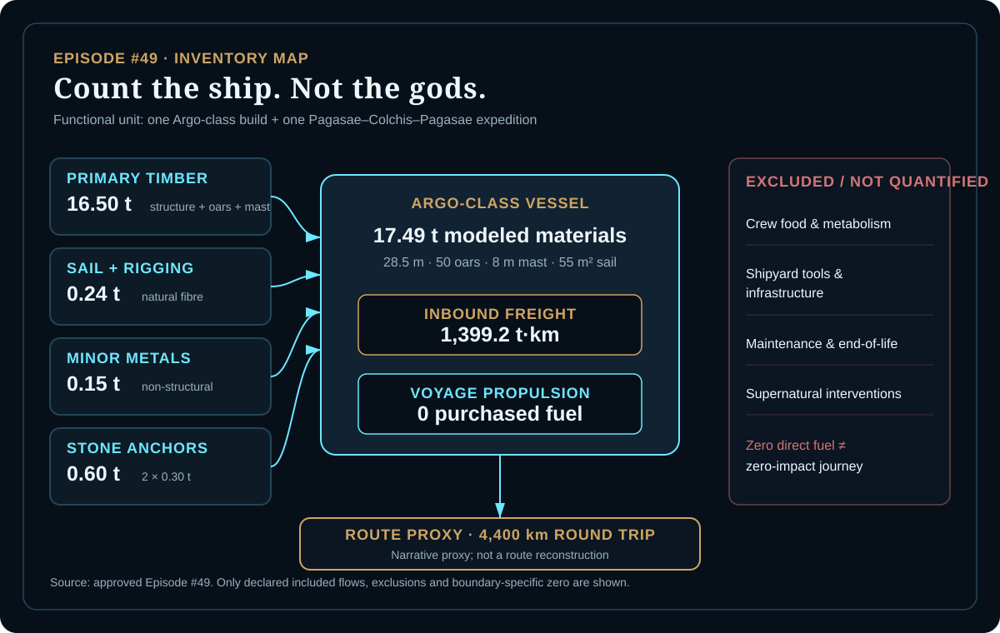
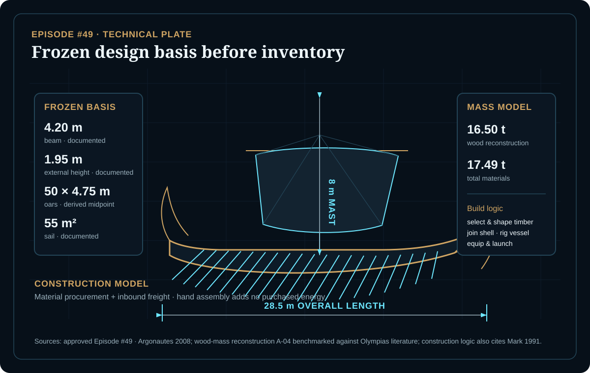
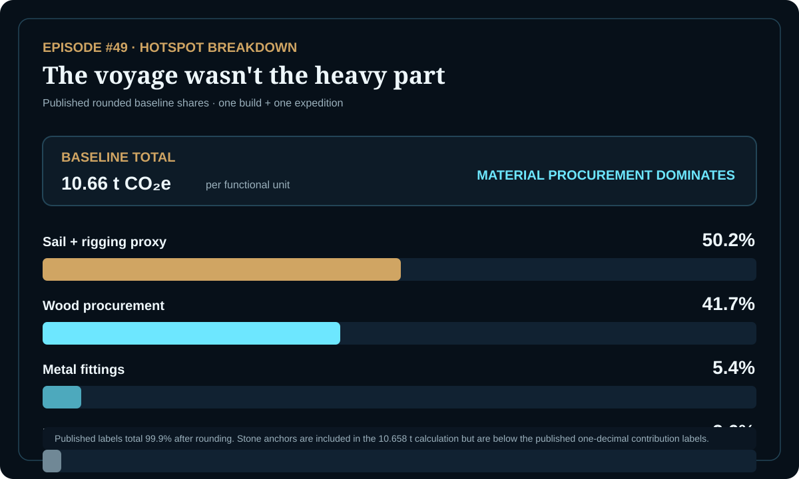

EPISODE #49 · MYTHS & LEGENDS
The Argo
If the voyage burns no purchased fuel, where does Argo's footprint actually sit?
THE SUBJECT
Fifty heroes. One material system.
The approved episode models one 28.5 m Argo-class vessel with 50 oars, an 8 m mast and a 55 m² sail, then follows one round-trip expedition represented by a 4,400 km narrative route proxy. The functional service is transport under sail and oar, not a fuel-burning engine.
Argonautes 2008 provides the principal technical reconstruction. Wood mass and several minor material quantities are explicit engineering assumptions frozen before calculation. Construction is represented as material procurement plus inbound freight; hand assembly adds no purchased energy. Crew food and metabolism, shipyard tools and infrastructure, maintenance and end-of-life, and supernatural interventions are outside the quantified boundary.
Vessel scale
28.5 m overall length, 50 oars, 8 m mast and 55 m² sail.
Material system
17.49 t total modeled materials, of which 16.50 t is wood: 94.3% by mass.
Main hotspot
Only 0.24 t of sail + rigging drives 50.2% of baseline GWP; wood contributes 41.7%.
Proxy warning
The DEFRA Clothing factor is a conservative sailcloth/rigging proxy and is the highest-uncertainty factor.
VISUAL MODEL
Freeze the ship before the math
The model separates physical reconstruction, declared material inputs and the boundary-specific zero for direct propulsion.


LIFE CYCLE INVENTORY
The mass is mostly wood
Activity data and factors reproduce the approved episode. Climate contributions below are direct activity × factor products where the episode provides both values.
| Stage | Component / activity | Activity data | Climate change | Modelling basis |
|---|---|---|---|---|
| Construction | Wood structure + oars + mast | 16.50 t | ≈4.45 t CO₂e | Frozen reconstruction A-04; DEFRA 2026 Wood – primary material production, 269.504 kg CO₂e/t. |
| Construction | Sail + natural-fibre rigging | 0.24 t | ≈5.35 t CO₂e | Engineering assumption A-05; DEFRA 2026 Clothing – primary material production, 22,310 kg CO₂e/t, used as a conservative proxy. |
| Construction | Non-structural metal fittings | 0.15 t | ≈0.57 t CO₂e | Minor / generic proxy A-06; DEFRA 2026 Construction – metals, 3,821.949 kg CO₂e/t. |
| Construction | Two stone anchors | 0.60 t | ≈4.7 kg CO₂e | 2 × 0.30 t, A-07; DEFRA 2026 Construction – aggregates, 7.803 kg CO₂e/t. |
| Inbound logistics | Construction freight | 1,399.2 t·km | ≈0.28 t CO₂e | 17.49 t × 80 km, A-03; DEFRA 2026 HGV average non-refrigerated rigids, 0.19947 kg CO₂e/t·km. |
| Voyage | Direct propulsion | 0 purchased fuel | 0 purchased-fuel CO₂e in the declared direct-propulsion inventory | Wind + human rowing, B-01. This is a boundary-specific zero, not an impact-free journey. |
Included
Primary timber, sail + rigging, minor metals, two stone anchors and inbound construction freight.
Excluded / not quantified
Crew food and metabolism, shipyard tools and infrastructure, maintenance and end-of-life, and supernatural interventions.
Route proxy
4,400 km round trip. The approved episode explicitly labels this a narrative proxy, not a route reconstruction.
Factor disclosure
The approved episode uses UK Government GHG Conversion Factors 2026 exact rows for wood, clothing, construction metals, construction aggregates and HGV freight.
HOTSPOT
The footprint is not in propulsion
The baseline is locked into material procurement and the conservative textile proxy.

Main result
10.66 t CO₂e
Per functional unit.
Sail + rigging proxy
50.2%
5.35 t CO₂e from only 0.24 t of material.
Wood procurement
41.7%
4.45 t CO₂e from the 16.50 t wood reconstruction.
Other published shares
5.4% metal · 2.6% freight
Logistics remains secondary to material choice.
Wood-mass sensitivity
14.0 t → 9.94 t CO₂e
16.5 t → 10.66 t CO₂e
19.0 t → 11.37 t CO₂e
A ±2.5 t swing moves the baseline by about ±0.71 t CO₂e; the textile proxy remains the largest line.
Freight-factor sensitivity
0.12499 → 10.55 t CO₂e
0.19947 → 10.66 t CO₂e
0.54001 → 11.13 t CO₂e
Changing only the HGV factor changes the edge, not the story.
The ship outweighs the voyage
Direct propulsion is 0 purchased-fuel CO₂e in the declared boundary; the baseline is material procurement plus inbound logistics.
A small textile mass can dominate
The 0.24 t sail + rigging inventory is 1.4% of material mass, yet its conservative clothing proxy produces 50.2% of baseline GWP.
Hull mass does not overturn the hotspot
The 14.0–19.0 t wood sensitivity changes the total, but textile remains the largest contribution across all three cases.
Logistics stays secondary
The reported HGV sensitivity spans 10.55–11.13 t CO₂e. Material assumptions remain the stronger lever.
THE VERDICT
For Argo, the voyage is light; the materials carry the carbon.